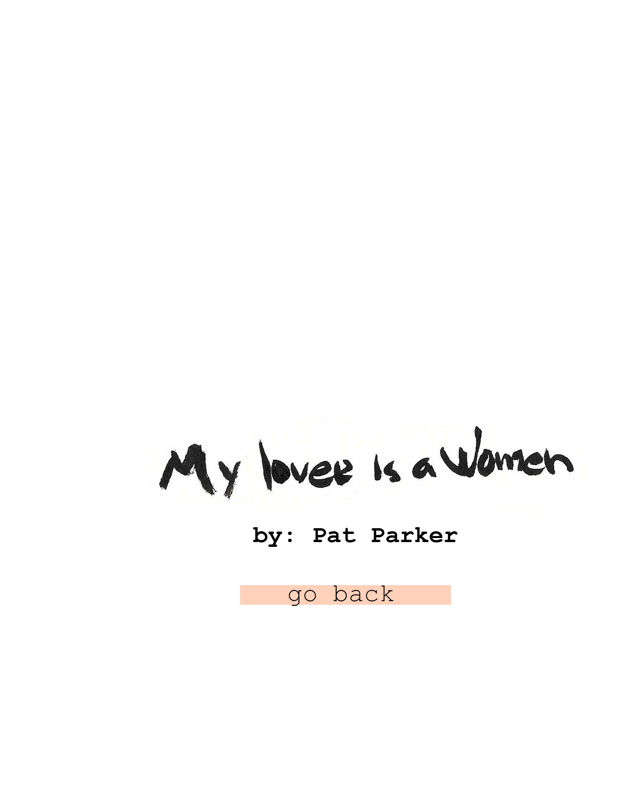
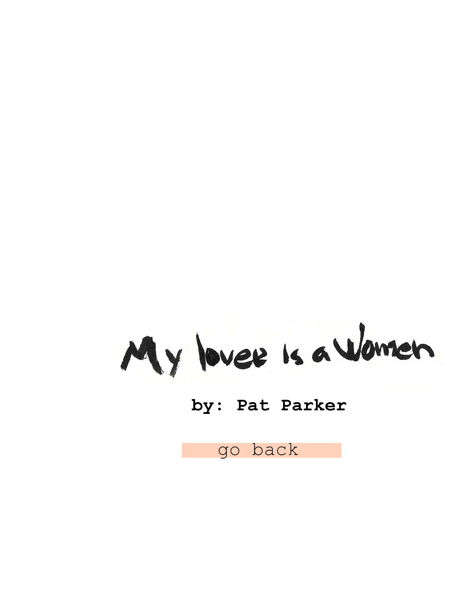

I.
my lover is a woman and when i hold her feel her warmth i feel good feel safe
then—i never think of my family’s voices never hear my sisters say bulldaggers, queers, funny come see us, but don’t bring your friends it’s ok with us, but don’t tell mama it’d break her heart never feel my father turn in his grave never hear my mother cry Lord, what kind of child is this?
II.
my lover’s hair is blonde and when it rubs across my face it feels soft feels like a thousand fingers touch my skin and hold me and i feel good then—i never think of the little boy who spat and called me nigger never think of the policemen who kicked my body and said crawl never think of Black bodies hanging in trees or filled with bullet holes never hear my sisters say white folks hair stinks don’t trust any of them never feel my father turn in his grave never hear my mother talk of her backache after scrubbing floors never hear her cry Lord, what kind of child is this?
III.
my lover’s eyes are blue and when she looks at me i float in a warm lake feel my muscles go weak with want feel good feel safe then—i never think of the blue eyes that have glared at me moved three stools away from me in a bar never hear my sisters rage of syphilitic Black men as guinea pigs rage of sterilized children watch them just stop in an intersection to scare the old white bitch never feel my father turn in his grave never remember my mother teaching me the yes sirs and ma’ams to keep me alive never hear my mother cry Lord, what kind of child is this?
IV.
and when we go to a gay bar and my people shun me because i crossed the line and her people look to see what’s wrong with her what defect drove her to me and when we walk the streets of this city forget and touch or hold hands and the people stare, glare, frown, and taunt at those queers i remember every word taught me every word said to me every deed done to me and then i hate i look at my lover andfor an instant doubt then—i hold her hand tighter and i can hear my mother cry. Lord, what kind of child is this?